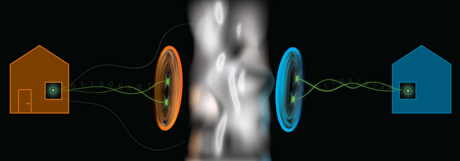
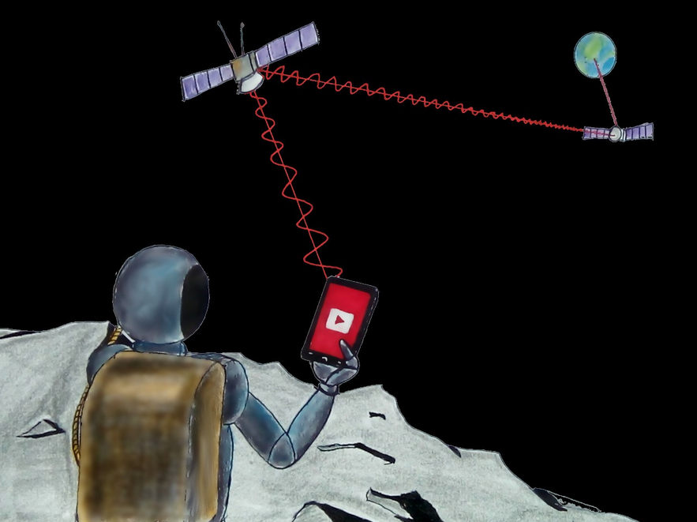
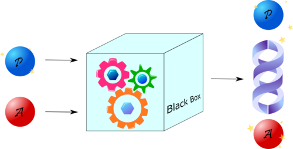
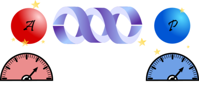
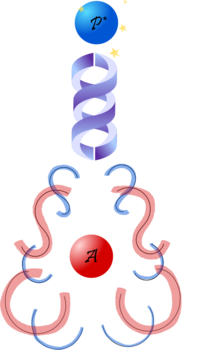

Spooky Action at a Distance¶
A coin is spinning. The coin is in a muddy, wet box resting on the ocean floor in the deepest part of the ocean. It’s pitch black. Don’t ask who set the coin spinning to begin with, or how it was brought down there —we’re physicists, not storytellers! The point of this is that the coin has a twin spinning in an identical box on the surface of a cold, icy planet billions of light years away. Suddenly, the firs coin stops spinning and falls heads up. At the same instant, the second coin, far enough away that it would take light from our planet billions of years to reach it, will come up tails.
How did the second coin ‘know’ what the first coin would do, and act accordingly? It’s clear that no information was communicated, since information cannot travel faster than the speed of light. So what’s going on?!
This ‘spooky action at a distance’ baffled Einstein so much that he rejected quantum physics! He thought the whole theory had to be wrong, because things like this just weren’t possible.

An artist’s depiction of entanglement
Particles that know each other’s state instantly in this way are said to be entangled. Entangled particles are very useful for quantum computers because the outcomes of their measurements are correlated. The entangled coins in the example above will always stop spinning (be measured) with their opposite sides facing up.
When it comes to particles in quantum circuits, a transformation that is applied to one particle in the set also indirectly affects the other particle, even if it is nowhere near the first particle physically. There are some really cool things that can be done because of this!
Quantum teleportation is a way to move quantum states around in the absence of a quantum channel linking the sender of the quantum state and the recipient. Let’s do a little experiment. Consider two friends in the near future, Alice and Bob. Alice lives on Earth, but Bob lives in a colony on Mars. Alice has a quantum state, called A , that she wants to send to Bob. However, an inter-planetary quantum channel for sending quantum states from one place to another doesn’t yet exist. Alice can only use classical information —ones and zeros—to transport her state. This seems like a pretty tough situation!

How do you think Alice can send her quantum state to Bob?¶
Options:
By making a copy of her state and sending it across the channel
By using entangled particles to transmit the information
By measuring her state and then sending it across the channel
Alice can use entangled particles. Remember that measurement alters a quantum state. What do you think this implies about the ability to make clones of a quantum state?
Remember our previous discussion: measurement of a quantum state changes its behaviour! This is why you can’t a) create a perfect copy of Alice’s state and/or c) measure the state to gain its information !
It would seem that the only way around this is to use spooky action at a distance to communicate the information.
How can we do this? Well, let’s create an entangled pair of particles, called P and P*. Before Bob leaves to go to Mars, Alice gives the P* particle to Bob.

Alice also retains her quantum state, A. Alice then passes both her state, A, and her half of the entangled pair, P, through a special circuit that imprints some of A’s properties onto P.

Alice then measures both A and P. This will tell us something about the properties of P.

You might think this is pointless —hasn’t Alice just destroyed the ‘weirdness’ of both states by measuring them?
But wait! Because P* was entangled with P, it retains some knowledge about P. And since P was passed through a circuit with A, it contains some of the information on A. This means that although P* was never in contact with A, it nevertheless knows its secrets.
So although it may appear that some information was lost during measurement of A and P, in reality, this information became available to P* the instant that A and P were measured. All Alice has to do is send Bob the results of her measurement, and Bob will now have a state P* that contains all the information about A. This is the magic of entanglement!

Keep in mind that for now, this is a qualitative description of what is going on— don’t worry if it’s a bit confusing. As you learn more, we’ll be able to explore this in more detail.